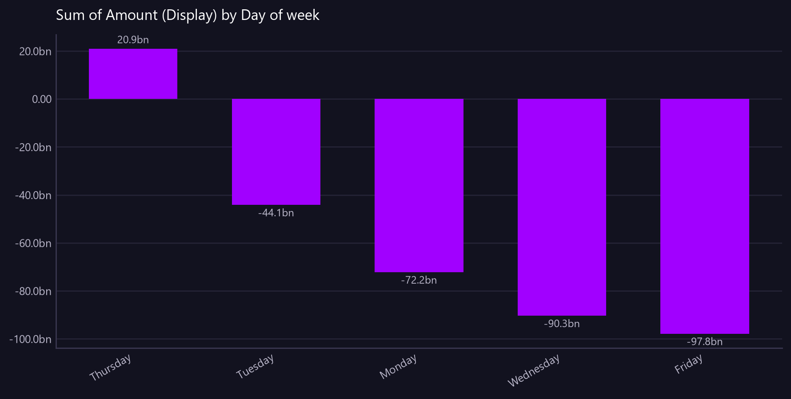

Sum of Amount (Display) by Day of week
Ledger flow by day of the week, to see which days are consistently heavier.
Asked as Compare total daily ledger flow by day of the week, so I can see which days are consistently heavier.

Commentary
The report presents the total daily ledger flow categorized by each day of the week. Thursday is the only day with a positive ledger flow, amounting to 20,852,099,122.10, indicating it is consistently lighter compared to other days. In contrast, Friday has the heaviest negative flow at -97,832,696,698.84, followed closely by Wednesday with -90,336,060,315.29. The operations team should particularly examine the significant negative flows on Monday, Wednesday, and Friday to understand the underlying factors contributing to these imbalances.
| Day of week | Amount (Display) |
|---|---|
| Thursday | 20,852,099,122.10 |
| Tuesday | -44,129,449,967.96 |
| Monday | -72,188,989,461.81 |
| Wednesday | -90,336,060,315.29 |
| Friday | -97,832,696,698.84 |
Limitations of this view
- The view is scoped to the value date range from 2026-07-20 to 2026-08-18.
- Amounts are translated using static synthetic FX rates to GBP.
- Data completeness depends on all transactions being received and processed.
- This is synthetic, non-production data.
Downloads
{kind=link}
The Markdown documents everything considered, so a reader can hand it to an AI and ask follow-up questions about this view.
How this was produced
{
"view": "business_ledger",
"sheet": "Business Ledger Txn View",
"source_file": "synthetic_liquidity_month.xlsx",
"mode": "aggregate",
"filters": [],
"group_by": [
"Day of week"
],
"time_bucket": null,
"measures": [
"sum of Amount (Display)"
],
"columns": [],
"sort_by": null,
"limit": null,
"join": null,
"derived": [
"Day of week"
],
"currency_corrections": [],
"data_as_of": "2026-08-18T21:35:41",
"measure": "Amount (Display)",
"aggregation": "sum",
"rows_in_view": 9780,
"rows_after_filters": 9780,
"rows_returned": 5,
"executed_at": "2026-08-20T11:29:21"
}